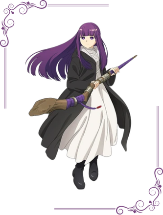
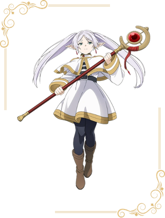
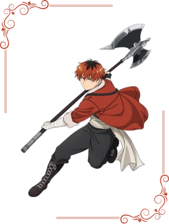

Em Frieren e a Jornada para o Além, uma elfa que pode viver por mais de mil anos reencontra seus antigos parceiros de aventura muito idosos e, ao passar por uma crise existencial, parte em uma nova missão para encontrar novas conexões. No anime, a elfa Frieren fez parte da equipe do herói Himmel para derrotar o Rei Demônio por 10 anos. Décadas depois de terem reinstaurado a paz no reino, ela vai ao funeral de Himmel encontra seus companheiros envelhecidos e com pouco tempo de vida, enquanto ela ainda tem a mesma aparência e séculos pela frente a viver. Frieren tem uma crise existencial e decide embarcar em uma nova jornada em busca de conexões emocionais profundas e de conhecer novas pessoas.

Fern é uma jovem maga humana que acompanha Frieren como sua aprendiz e membro do grupo. Ela é uma refugiada de guerra órfã, originária das Terras do Sul, que foi posteriormente adotada por Heiter e colocada sob os cuidados de Frieren após a morte dele.

Frieren é a protagonista principal de Frieren: Além do Fim da Jornada. Ela era a maga do grupo de heróis e viajou ao lado de Himmel, o Herói, Eisen, o Guerreiro, e Heiter, o Sacerdote, em uma jornada de dez anos para derrotar o Rei Demônio. Após a morte de Himmel, Frieren começou sua jornada com Fern e Stark para visitar Aureole e falar com Himmel mais uma vez.

Stark é um guerreiro humano. Após sua aldeia ser atacada por demônios, ele fugiu e tornou-se aprendiz de Eisen. Sob as instruções de Eisen, ele se juntou ao grupo de Frieren como vanguarda.